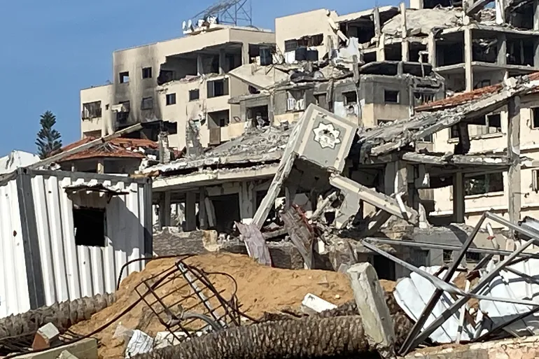

After 700 days of relentless war, the Israeli military campaign has inflicted catastrophic human and material destruction across the Gaza Strip. The offensive has resulted in the death, injury, or arrest of nearly a quarter of a million Palestinians, with an estimated 64,232 killed and 161,583 wounded. The human toll is staggering in its detail, with children comprising over 30% of the casualties, including infants born and killed during the war. The assault wiped out over 2,600 families and left nearly 9,500 people missing under the rubble or in inaccessible areas.

The war's impact extends far beyond the immediate loss of life, methodically eradicating the very foundations of society. Vital sectors essential for survival and future recovery have been systematically destroyed. The health sector has been crippled, with 38 hospitals and 96 health centers rendered inoperable. The education system lies in ruins, with 156 schools and universities destroyed and 382 partially damaged. This comprehensive annihilation has also obliterated housing, agriculture, industry, and commerce. The preliminary cost of this direct damage to 15 vital sectors is estimated to exceed $68 billion and is expected to rise as the conflict continues.
The consequences of this destruction are profound and will span generations. The targeted annihilation of healthcare, education, and agricultural infrastructure has created a humanitarian crisis, leading to the deaths of hundreds, including 131 children, from famine and malnutrition. The loss of life is compounded by a shattered society: tens of thousands of children have been orphaned, and the deliberate destruction of mosques, churches, media institutions, and government buildings has erased cultural, spiritual, and civic life. As the government media office states, a precise assessment is impossible while the "mad war" continues, but the current data paints a clear picture of a widespread campaign that has left Gaza's infrastructure and social fabric in utter ruin.